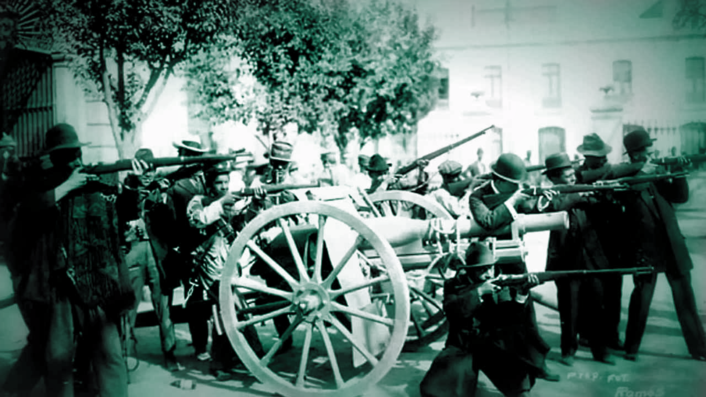

El objetivo común: Porfirio Díaz
Luego de que el presidente Porfirio Díaz resultara electo para un nuevo período presidencial (1910-1914), el excandidato y líder liberal Francisco I. Madero lanzó el Plan de San Luis -fechado el 5 de octubre de 1910- para derrocarlo.
Su lema principal fue "Sufragio efectivo, no reelección", y reivindicaba derechos laborales y la repartición de tierras que buscaban grupos sociales contrarios a Díaz, según la "Cronología de la Revolución", del INEHRM.
